Ce projet est né d'une demande transmise par une agence immobilière rouennaise. L'un de leurs clients était intéressé par une maison rénovée, mais un point bloquait réellement l'usage du lieu : l'accès à l'étage.
La maison avait été rénovée, mais la partie escalier posait problème. L'escalier existant était dangereux, peu confortable et mal adapté à l'espace. La trémie était également trop petite pour permettre l'installation d'un escalier standard, qu'il soit en colimaçon, quart tournant ou issu d'une solution toute faite. Il fallait donc trouver une réponse sur mesure, capable de sécuriser l'accès à l'étage tout en s'intégrant dans un espace très contraint.
Une première visite pour comprendre les contraintes
Lors de la première visite, l'objectif était d'analyser le lieu, de prendre les cotes et de comprendre ce qui pouvait être conservé ou non. Très vite, le constat a été clair : il n'était pas possible de simplement modifier l'escalier existant. Les marches, la structure, la pente et la stabilité générale ne permettaient pas d'obtenir une solution réellement sécurisante et durable.
La difficulté principale venait du manque d'espace. La trémie était trop réduite, les passages étaient étroits et aucune solution standard ne pouvait convenir. Il fallait imaginer un escalier capable de s'adapter au lieu, et non l'inverse.
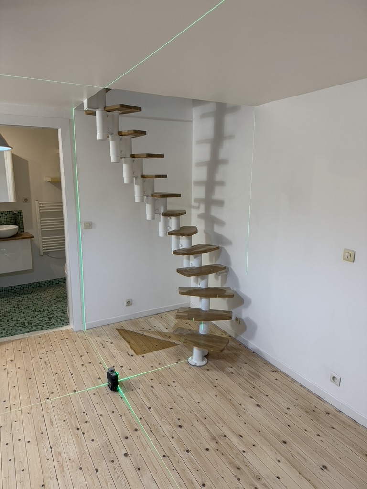
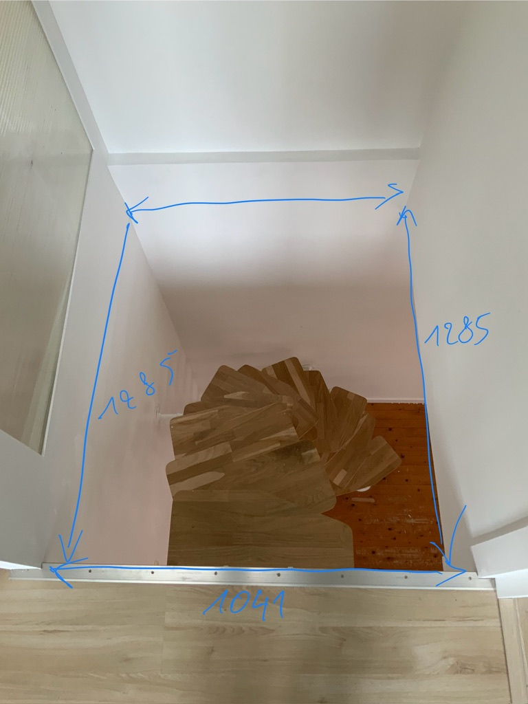
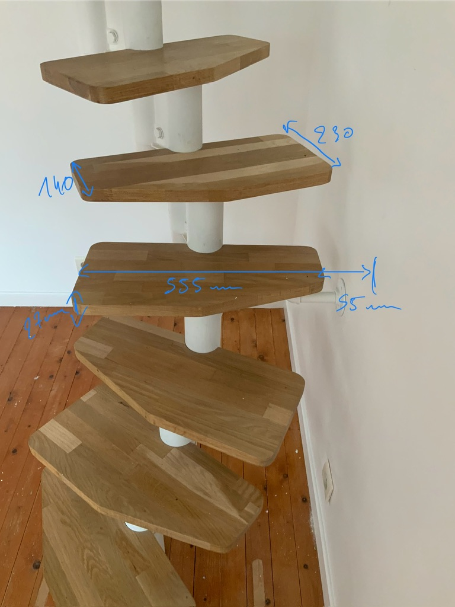
Une solution inspirée de l'escalier japonais
De retour au bureau, plusieurs hypothèses ont été étudiées : escalier quart tournant, adaptation de l'existant, solutions compactes. Mais aucune ne répondait réellement à l'ensemble des contraintes. La solution retenue a finalement été de partir sur un principe d'escalier japonais, aussi appelé escalier à pas décalés. Ce type d'escalier permet de gérer une pente importante tout en conservant un usage cohérent, à condition que chaque détail soit précisément étudié.
L'enjeu était de permettre une montée sécurisée malgré l'espace réduit, tout en tenant compte du passage de la tête au niveau de la trémie. Il fallait déterminer le bon départ, le bon pied d'appui, le bon sens de montée et la bonne position des marches, afin d'éviter tout inconfort ou risque de choc lors du passage vers l'étage.
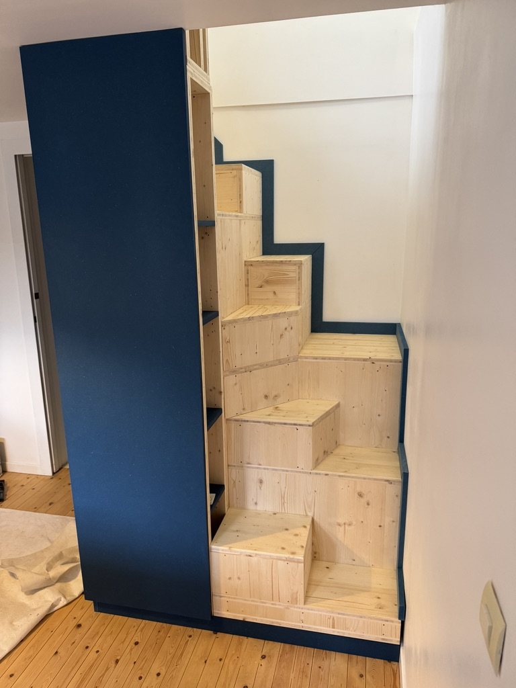
Une structure en trois plis épicéa et une reprise de niveau
Le projet devait rester cohérent avec le budget du client, tout en proposant une solution fiable, stable et pérenne. Le choix s'est donc porté sur du panneau trois plis en épicéa de 30 mm d'épaisseur. Ce matériau offre une bonne stabilité, une résistance adaptée à ce type d'usage et une esthétique sobre, en accord avec l'esprit du projet.
Une autre difficulté est apparue lors de l'étude : le sol existant n'était pas parfaitement stable ni de niveau. Il s'agissait d'un parquet ancien, avec des irrégularités qu'il fallait absolument prendre en compte avant la pose. Pour garantir une base fiable, une structure de réglage a été imaginée, avec un système de pieds réglables suffisamment solides pour reprendre les différences de niveau. Dans un projet comme celui-ci, la qualité de l'appui au sol conditionne la stabilité de l'ensemble.
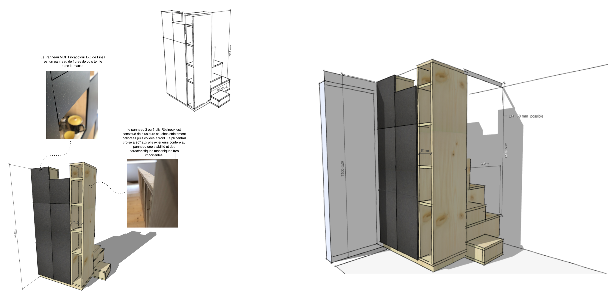
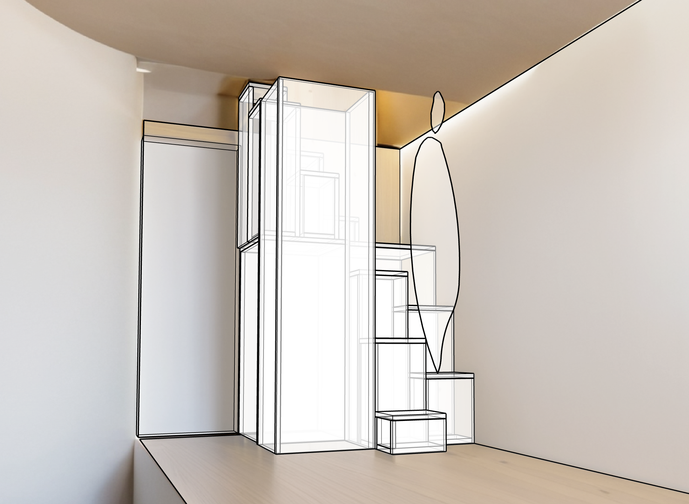
Optimiser l'espace sous l'escalier
En travaillant sur la structure, un autre potentiel est apparu : l'espace situé sous l'escalier pouvait être utilisé intelligemment. Dans cette pièce, le manque de rangement était évident. L'idée a donc été de transformer la contrainte en opportunité, en créant un meuble intégré sous l'escalier.
La solution a été de créer un rangement fermé, intégré dans le volume de l'escalier, pouvant notamment accueillir de la vaisselle ou des éléments du quotidien. À l'extrémité de ces rangements, une partie vitrine a également été imaginée afin de mettre en valeur certains objets. Cette vitrine trouve son écho de l'autre côté, dans la montée de l'escalier, où l'on retrouve le même principe : un espace de présentation associé à du rangement. L'ensemble crée une continuité visuelle et fonctionnelle entre les deux faces du meuble-escalier.
Pour renforcer le caractère épuré de ces vitrines, un système de rétroéclairage a été intégré avec une LED très fine, discrètement incrustée dans le montant. La lumière devient ainsi un véritable élément de mise en scène. L'éclairage est commandé par un interrupteur connecté provenant de Domus Openline, permettant d'allumer, d'éteindre et de régler l'intensité lumineuse selon l'ambiance souhaitée.
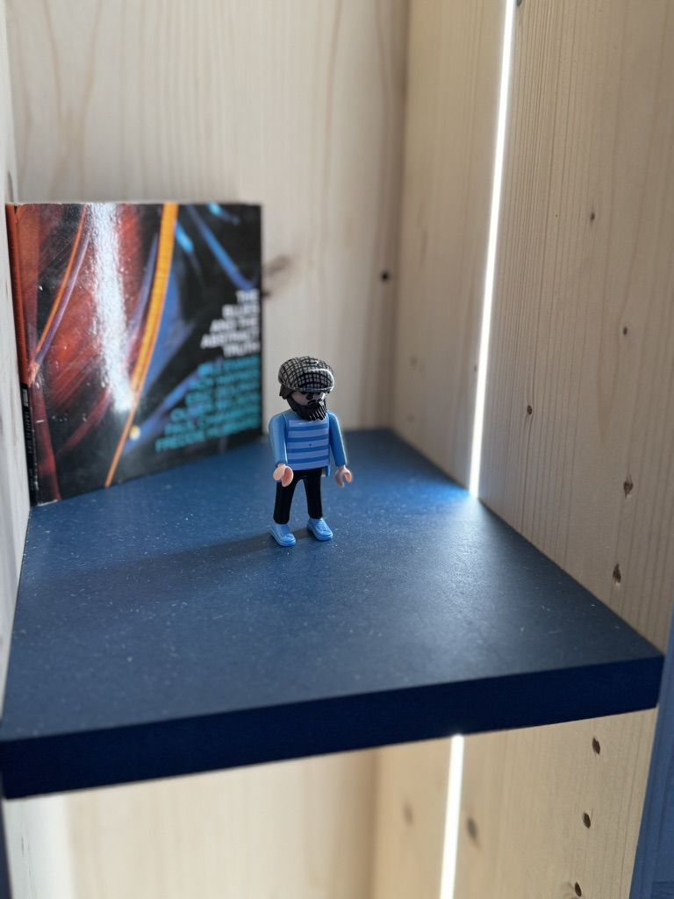
Le choix du Valchromat pour les façades
Pour les façades du meuble-escalier, le choix s'est porté sur du Valchromat, un panneau de fibres de bois teinté dans la masse. Le client a choisi une belle teinte bleue, qui se marie très bien avec la chaleur naturelle de l'épicéa utilisé pour la structure.
Ce contraste entre le bleu du Valchromat et l'épicéa apporte une vraie identité au projet. Contrairement à un MDF classique, le Valchromat est teinté dans la masse : la couleur n'est pas simplement appliquée en surface, elle fait partie du panneau. Ce matériau permet de travailler les détails, les usinages et les formes avec beaucoup de liberté. Pour ce projet, les façades ont été protégées avec une finition à l'huile Rubio, permettant de préserver la matière et d'obtenir un toucher agréable tout en conservant l'aspect naturel du panneau.
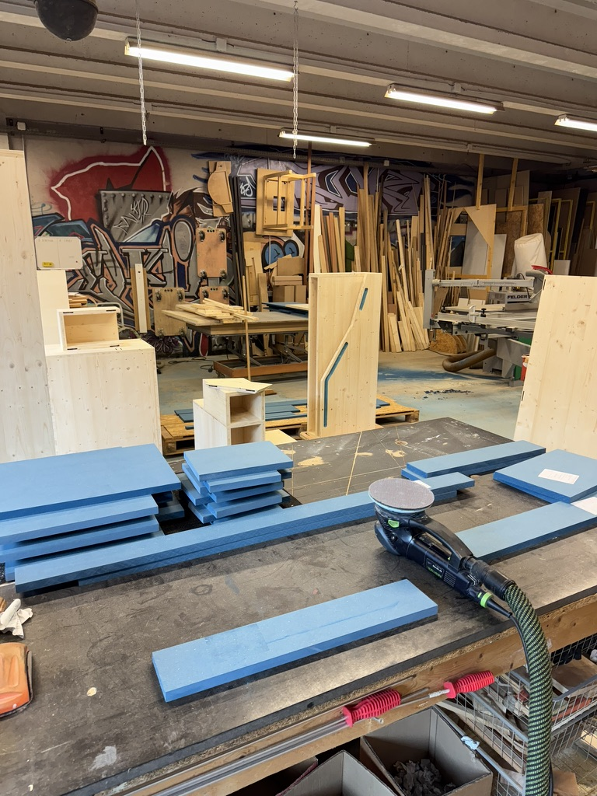
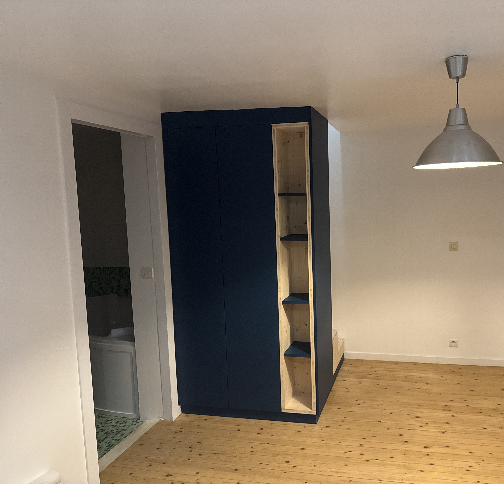
Fabrication, montage à blanc et rénovation du parquet
Une fois l'étude validée, le projet est parti en fabrication à l'atelier. Avant la pose définitive, un montage à blanc a été réalisé. Le client a été invité à venir à l'atelier pour tester le passage, vérifier la montée et valider le fonctionnement de l'escalier. Cette étape était particulièrement importante pour un escalier japonais : le principe des pas décalés nécessite une vraie précision d'usage, le confort dépend du bon enchaînement des marches et de la position du corps.
Au fil des échanges, la question du sol s'est également posée. Le parquet existant avait vécu, avec des marques d'usage importantes et des zones dégradées. Atelier EGEA a donc proposé de prendre en charge la rénovation du parquet afin d'obtenir un ensemble plus harmonieux. La finition retenue a été réalisée avec une huile Rubio, permettant de protéger le bois tout en conservant un aspect naturel et chaleureux.
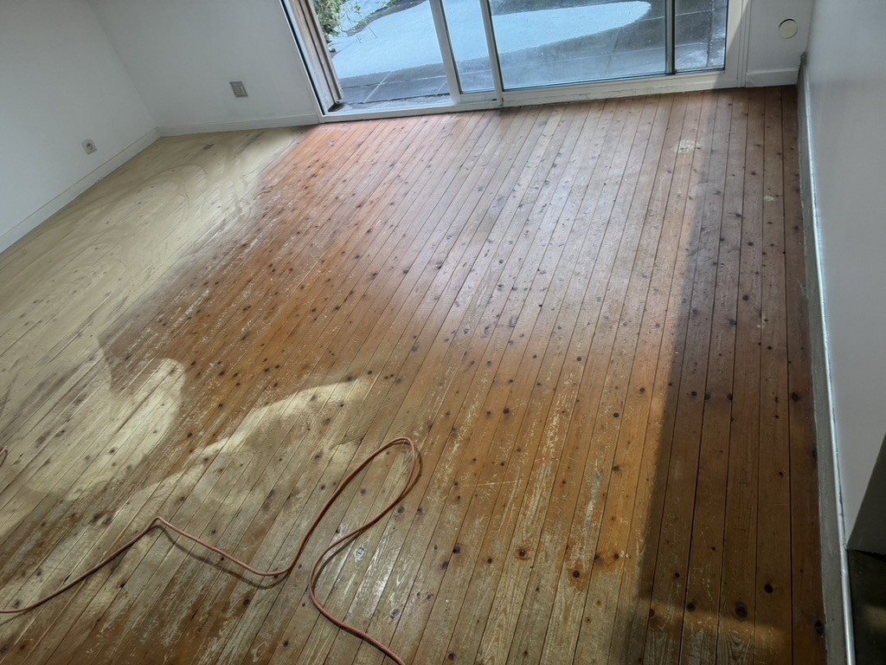
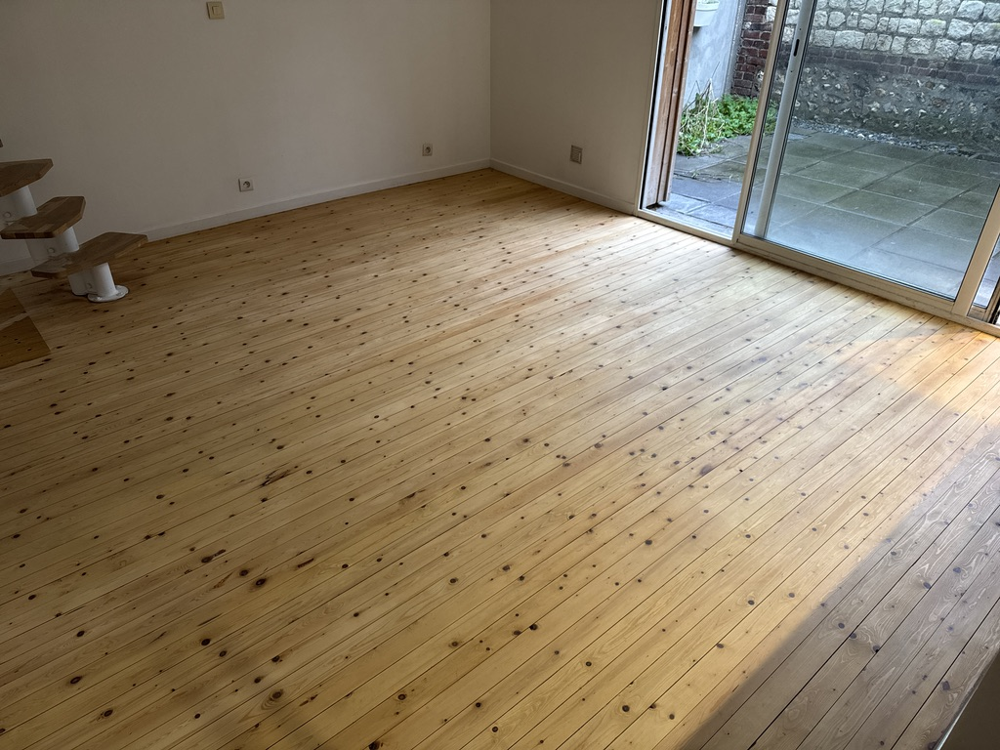
Un projet qui résume l'esprit Atelier EGEA
Ce projet illustre parfaitement l'approche d'Atelier EGEA : partir d'une contrainte forte pour créer une solution sur mesure, fonctionnelle, sécurisée et esthétique. Au départ, il s'agissait simplement de trouver une manière de monter à l'étage. Mais la réponse a permis d'aller plus loin : sécuriser l'accès, stabiliser l'ensemble, optimiser les rangements, améliorer l'usage de la pièce et redonner une cohérence à l'espace.
Une solution sur mesure était indispensable. Aucun escalier standard n'aurait pu répondre correctement à l'ensemble de ces contraintes. Ce projet montre qu'un espace difficile n'est pas forcément une limite. Avec une étude précise, une bonne compréhension du lieu et un travail d'agencement adapté, il peut devenir une véritable opportunité.